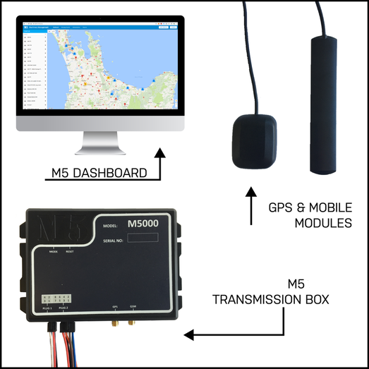

TPMS
Tyre pressure monitoring system.
Tyre Pressure Monitoring System
Our direct TPMS is a state of the art tool designed to give companies and their drivers useful data on the health and safety of their tyres. This data is transmitted in real-time from a device located inside each wheel to the M5 transmission box located in the cab of the vehicle. The information is then available for viewing on the M5 Dashboard. The M5 fleet management system accompanies the TPMS. The TPMS aims to reduce traffic accidents, poor fuel economy, and tyre wear through early recognition of a hazardous state of the tyres.
How It Works
We have developed one of the first direct TPMS sensors that uses cloud technology to store data.
The system can be fitted to any vehicle that has tyres. It is installed by an adhesive pad or by attaching it to a nylon strap which is secured around the wheel centre ( updated nylon strap TPMS system ). One sensor is required per tyre.
This system tracks distance covered and operational hours that the tyre has been in service. The M5 TPMS records historical tyre data for up to two years – this allows you to review and analyse past tyre information over years on the road.
The system is designed to monitor tyre pressure and temperature, and automatically sends alerts when any of the levels are irregular. If the tyre is leaking slowly or overheating, the TPMS will pick up on this much faster than you ever could manually.
Benefits of having a TPMS:
- Improved tyre efficiency by avoiding under-inflation
- Improved fuel efficiency by helping keep the tyres at the ideal pressure
- Improved stability, handling and brake efficiency, meaning greater safety for the driver, vehicle and others on the road
- Spend less time on maintenance and downtime
Risks of not having a TPMS:
- Under-inflated tyres cause fuel inefficiency
- Under-inflated tyres can lead to tread separation, disintegration, and tyre failure
- Slow leaks are common but difficult to detect
- Driving on under-inflated or worn tyres increases the chance of traffic accidents